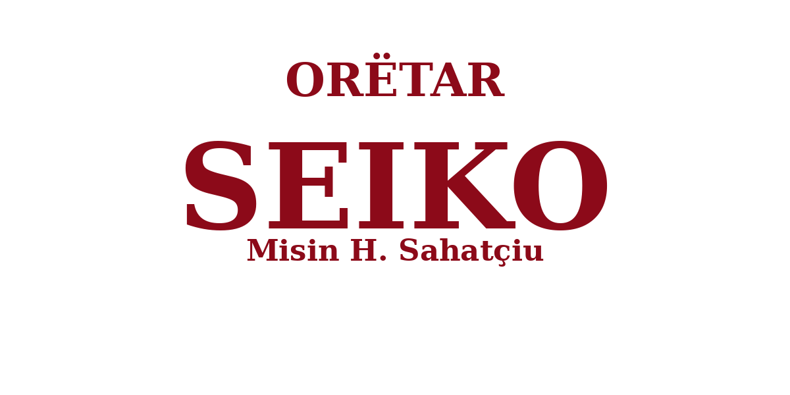

Servisimi dhe riparimi i orëve tuaja me përkushtim. Nga ndërrimi i pjesëve e baterive, deri te rregullimi i mekanizmave më të vjetër.
Na VizitoniServisim i detajuar i mekanizmave automatikë dhe me kurdisje manuale.
Bateri origjinale zvicerane e japoneze me jetëgjatësi të lartë.
Zëvendësim i xhamave mineral, sapphire apo plexiglass.
Pastrim i kontakteve elektronike dhe servisim i mekanizmit me bateri.
Montim i rripave të rinj lëkure apo çeliku dhe përshtatje e madhësisë.
Rregullimi i akrepave, fiksimi i numrave të rënë dhe pastrim i brendshëm.
Për çdo defekt apo nevojë tjetër specifikisht për orën tuaj, na vizitoni në punishte ose na kontaktoni direkt.
+38344437136
"Familja ime i ka besuar Orëtarisë SEIKO (Misin H. Sahatçiu) prej shumë viteve me radhë. Familja Sahatçiu njihet brez pas brezi për mjeshtëri dhe përkushtim të lartë në artin e orëtarisë."